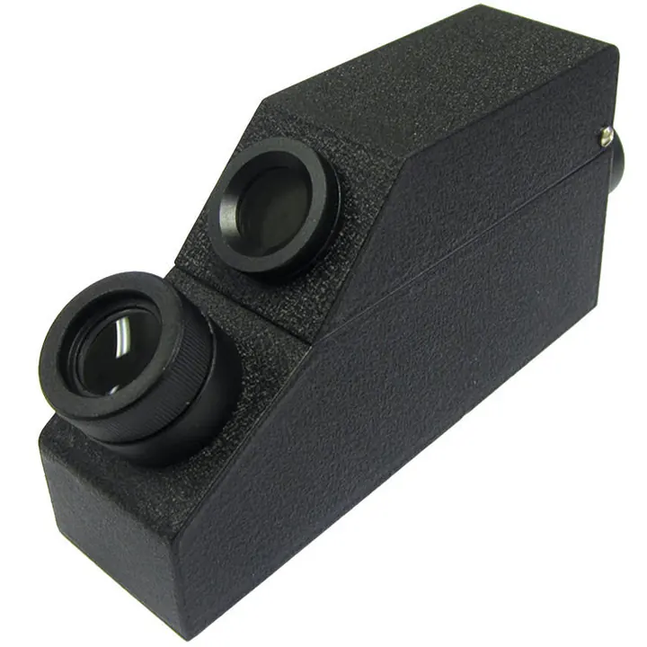
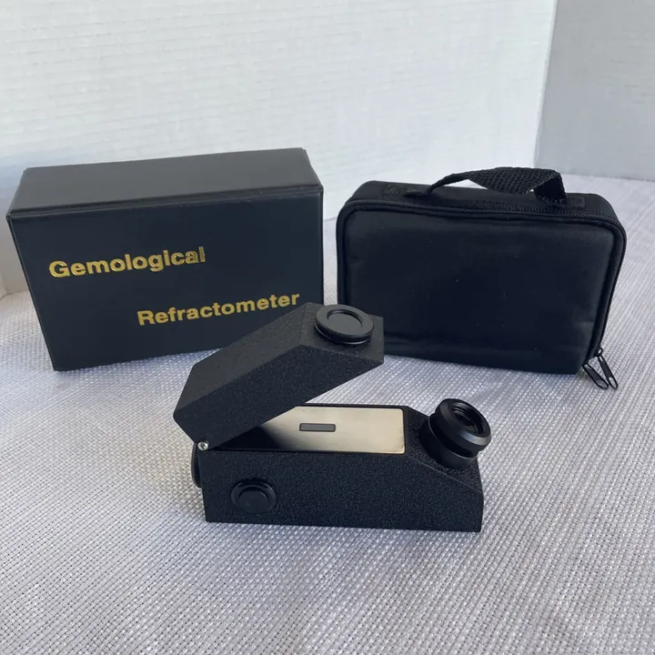

十倍放大鏡：鑑定師的第一件工具
寶石鑑定師的口袋裡，永遠有一支十倍放大鏡——它小，卻能看穿寶石的半生。


核心定義
十倍放大鏡（loupe，10×）是寶石鑑定的第一工具——十倍放大足以觀察：內含物、切工品質、表面處理痕跡、雙折射重影。它輕、便宜、隨身——「鑑定師的眼睛」從一支 loupe 開始。
標準用法：眼睛貼近鏡片、寶石靠近對焦（距離約 2-3 公分）、從不同角度旋轉觀察——重點看：內含物種類、裂隙、生長紋、拋光痕、鍍層磨損。
特徵與分類
| 觀察目標 | 內容 | 鑑定意義 |
|---|---|---|
| 內含物 | 晶體、針狀、三相 | 天然/合成/產地 |
| 裂隙 | 癒合紋、裂縫 | 處理（注油） |
| 生長紋 | 彎曲紋/直線紋 | 合成 vs 天然 |
| 拋光痕 | 表面線條 | 切工品質 |
| 重影 | 背面棱線成雙 | 雙折射寶石 |
十倍放大鏡的經典應用：看紅寶的「針狀金紅石」（絲絨）、祖母綠的「三相包裹體」（哥倫比亞）、合成紅寶的「彎曲生長紋」——內含物是寶石的「指紋」。
科學原理
十倍放大的光學：凸透鏡的放大率＝明視距離（25 公分）÷焦距——10× 放大鏡焦距 2.5 公分。十倍是「鑑定基準」：GIA 的淨度分級以十倍放大為標準——超過十倍靠顯微鏡。
觀察技巧：用「暗場照明」（寶石背光）讓內含物更清晰；斜光看表面拋光痕；透光看內部結構——光的角度，決定你看到多少。
鑑定與鑑別方法
- 選鏡：10× 無色差三片組為佳
- 持鏡：貼近眼睛、寶石靠近
- 照明：暗場＋斜光交替
- 系統觀察：內含物→裂隙→生長紋→表面
- 記錄：描述內含物特徵
市場行情與保養建議
市場價值：十倍放大鏡是「消費者自保」的最便宜工具——買寶石前用它看內含物、看裂隙、看處理痕跡——「一支 loupe，省下萬元學費」。高品質 loupe 價格約數百人民幣。
建議：鑑定入門者必備 10× loupe；配合折射儀與比重，即可完成大部分寶石快篩。loupe 是「眼睛的延伸」——看得越多，被騙越少。
常見誤區
10× 是鑑定標準（過高倍數景深淺、難對焦）——GIA 淨度分級就用 10×。高倍數交給顯微鏡。
內含物與處理痕跡多在十倍下現形——肉眼無瑕的寶石，放大後可能「有故事」。loupe 是買寶石的「驗光師」。
冷知識
這個鑑定師的標配，名字源於法語——珠寶鑑定術語裡，法語與德語的傳統很深。
哥倫比亞祖母綠的三相包裹體、斯里蘭卡藍寶的鋯石暈圈——loupe 下的內含物，藏著產地的地圖。
反直覺觀點
一支幾百元的 loupe，能識破合成紅寶的彎曲紋、注油祖母綠的裂隙——鑑定的第一道防線，是最不起眼的工具。
天然寶石的內含物是天然證明——「瑕疵」越特別，越可能是真品。看懂 loupe，瑕疵也能讀出故事。